Точка входа
У старого компьютера начинается знакомство с клубом. Один снимок может открыть целую историю.
Клуб, где воспоминания становятся комнатами. В них можно зайти вместе и поделиться своей историей.
Как попасть в клуб«Общий доступ» — клуб для тех, кому интересно, как живут и что помнят другие.
Здесь можно не только рассказать о важном моменте, но и оказаться в нём вместе.
Твой билет — одно воспоминание.
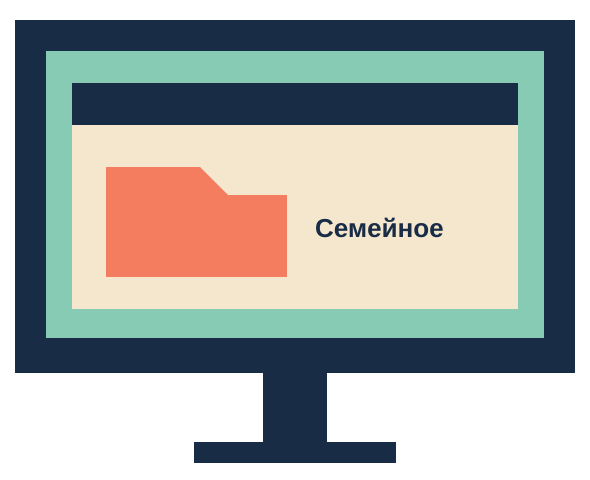
Всё началось со старого компьютера и папки «Семейное».
Однажды вместо снимка на экране появилась комната. В неё удалось войти.
Потом свои фотографии принесли друзья. Комнат стало больше, и появился наш клуб.
Место для твоих историй
Старый компьютер, общий стол и дверь в чей-то важный день. Здесь хочется остаться чуть дольше.
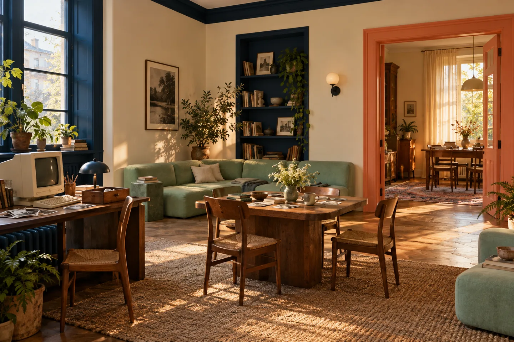
У старого компьютера начинается знакомство с клубом. Один снимок может открыть целую историю.
Место для разговоров, фотографий и встреч. Можно просто посидеть и послушать других.
За каждой дверью — чей-то момент. Летняя кухня, двор детства или вечер с друзьями.
Первый визит
Выбери фотографию с моментом, которым хочется поделиться.
Вспомни, кто был рядом, что звучало и чем тебе запомнился этот день.
В мире нашего клуба компьютер собирает из твоей истории место, в которое можно войти.
Реши, с кем разделить этот момент. Доступ к своей комнате выбираешь ты.
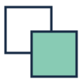
Открывай только те моменты, которыми сам готов поделиться.
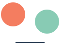
Дай человеку рассказать свою историю. Здесь важны даже мелочи.
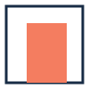
Уважай чужие воспоминания и личные границы.
У каждого момента есть место.
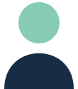
Зайти в чужую комнату и увидеть знакомые вещи по-новому.
Вспомнить общий момент и узнать друг о друге что-то новое.
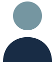
Открыть старые фотографии и снова оказаться в том дне.
Вещи клуба
Небольшие вещи, которые можно забрать с собой. Чтобы история продолжалась за пределами комнаты.
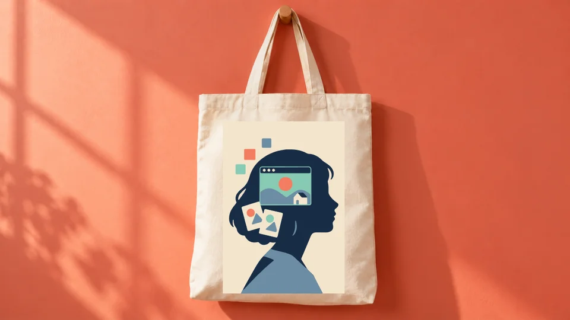
Для вещей, которые хочется взять с собой.
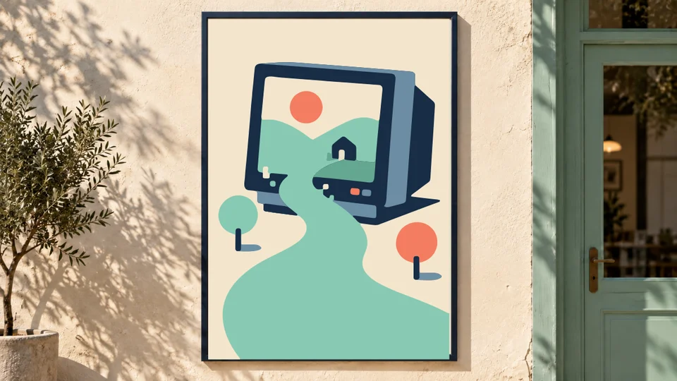
Ещё одна дверь в знакомое воспоминание.
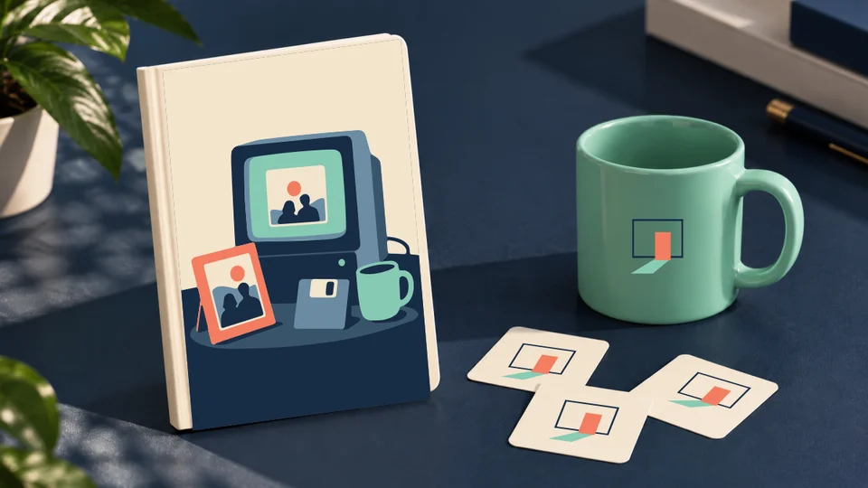
Записывать, вспоминать и делиться.
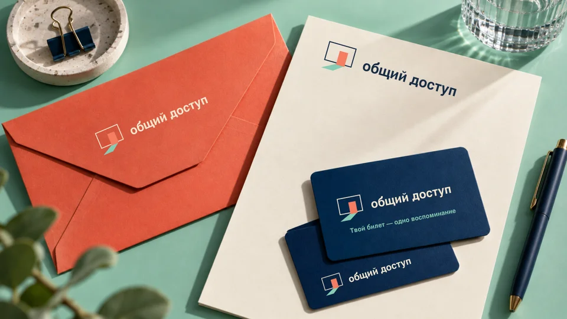
Твой билет — одно воспоминание.
Перед знакомством
Только те, кого ты пригласишь. Можно открыть комнату друзьям, всем участникам клуба или оставить её для себя.
Можно начать с рассказа. Запах дождя, знакомая песня или короткий разговор тоже помогают вспомнить важный момент.
Нет. Ты сам выбираешь, что рассказать. Можно прийти послушать других или поделиться простым приятным днём.
Компьютер здесь открывает комнаты памяти. Встречаются в клубе ради историй, общения и возможности увидеть знакомый мир чужими глазами.
Как попасть в клуб
Выбери снимок или историю, к которой хочется вернуться. Представь, кого ты пригласишь разделить этот момент.
«Общий доступ» — вымышленное пространство. Его двери пока открыты в нашей истории.
С чего начать